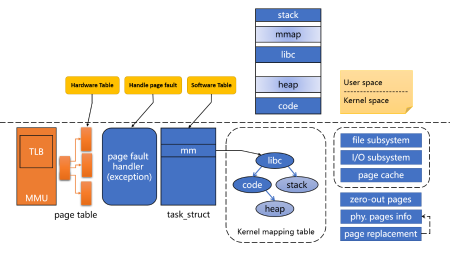
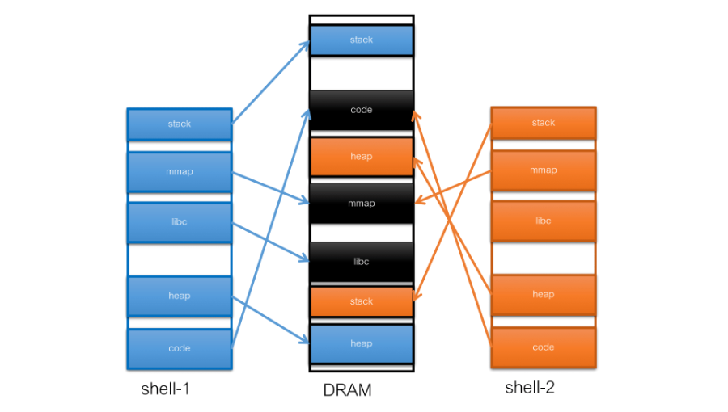
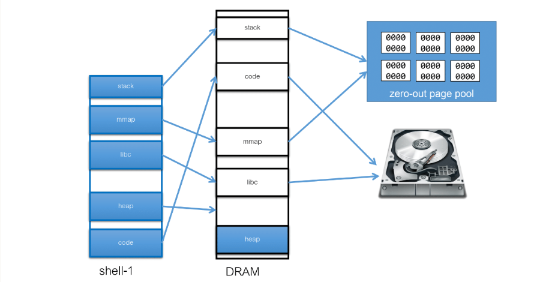

OS | Virtual Memory (Unfinished)
Operating System: Design and Implementation course notes from CCU, lecturer Shiwu-Lo.
本章節會主要介紹 Virtual Memory 這是這章節的討論範圍
- Virtual Memory Hardware and Software
- Virtual Memory Example
- Page Replacement
- Working Set
- open, read, writ vs. mmap
- 這幾種 System Call 的差異
- TLB miss
MMU Main Function
- MMU 主要處理記憶體分配的問題
- 消除了 External fragmentation(外部碎片)
- 由於 Page size 僅有 4KB，所以 Internal fragmentation(內部碎片)很輕微
- 如果 TLB miss
- 假設該 TLB 要去 Mapping 的 Page 在 Memory 中只要將 Virtual memory to Physical memory 的 Mapping 加入 TLB 即可
- 上述的動作可以使用 Hardware 來完成，或使用 Software 來完成
- 如果 TLB miss 並且 Hardware 的表格也查不到呢
- 稱之為 Page fault
What is Virtual Memory
8.1 Define the Virtual Memory
嚴格的定義: 由軟體重新定義 Page fault
- 當 CPU 所要存取的 Memory 根本不存在於 DRAM 中時，就稱作為 Page fault
- 如果我們啟動 Software 此時該 Software 所要存取的 Memory 根本不存在於 DRAM 中，就稱作為 Page fault，例如 Segmentation fault
- OS 設計者重新詮釋了 Page fault 的意義，例如:
- OS 暫時還沒把該 Page 載入到 DRAM 中，重新載入就好
- 例如: Execl 我可以不用一次把所有的功能都載入，等到使用者真的要使用到該功能時，再載入該功能就好
- OS 讓不同的 Process 隱形共用內容相同的 Page
- 唯讀，不會有任何問題發生，還可以減少記憶體使用量，例如: fork() 使用 Copy-on-write 的技術來實作
- 寫入，OS 必須確保每個 Process 在邏輯上都有自己的 Page，例如: 即使 fork() 使用同一份 Memory，但是要確保程式的 Logic address 上是不同的
- OS 暫時還沒把該 Page 載入到 DRAM 中，重新載入就好
稍微寬鬆一點的定義: 讓 Mapping 變得更加靈活
- 透過設定 MMU，使 Memory Mapping 更加靈活的例子
- Shard Memory，讓不同的 Process 可以共用同一份 Memory
- 可以將檔案 Mapping 到 Process 的 Memory Space，讓 Process 可以直接存取檔案
- 可以將部分 I/O 的記憶體 Mapping 到 Process 的 Memory Space，讓 Process 可以直接控制 I/O
- Linux 中使用 mmap 存取
/dev/mem
- Linux 中使用 mmap 存取
8.2 Virtual Memory Components
下圖是 Virtual Memory 中會需要的組件

- Hardware table(Page table)
- 這部分由 OS 來寫入硬體所設計的表格，由 MMU 來讀取，例如: x86 定義表格，Linux 依照 x86 的定義來實作
- 每個 Process 都有自己的 Page table
- 如果 TLB miss 硬體查詢 Page table 還是找不到，此時觸發 Page fault exception
- Software table(mm_struct, kerne mapping table)
- 每個 Process 甚至 Linux Kernel 都需要一個查詢表，快速的查詢每個 Memory 是否正確
- 如果正確還發生 Page fault 如何處理？
- 處理 Page fault
- OS 必須有 Page fault handler(Interrupt service routine)
- 並且要能紀錄: 錯誤的原因，錯誤的 Address
Virtual Memory Example
8.3 Shard Memory

- stack, heap 這部分是程式自己獨有的
- 黑色的部分是共享的:
- code, libc: 這兩個是同一個程式但是開了兩個 Process
- 因為在執行時會去 Mapping 硬碟上的執行檔，這樣 OS 就能知道其實這兩個 Process 完全是一樣的
- 並且這部分只能 Read，這樣就沒有 Locked 所造成的效能瓶頸
- mmap: 這部分不是由 Kernel 去分享的，當 Shell 去呼叫 mmap syscall，後得到一個符號這樣就可以將該記憶體映射至自己的 Memory
- shell-1 將資料傳給 shell-2 要傳的是資料在 mmap 中的 offset
- 盡量不要去指定 mmap 要被映射的 Address
- code, libc: 這兩個是同一個程式但是開了兩個 Process
- Virtual Memory 允許 Code, Data 共享
- 多個程式使用相同的 Library，例如: libc
- 應用程式透過 Shared memory 共享資料，例如: mmap
- Parent 和 Child 都沒呼叫 execv 的話，記憶體內容幾乎一樣，例如: Copy-on-Write
- Linux 允許隱含式的共享
- Linux kernel 可能會掃描 Memory，將內容一樣的 Page 隱含共享
- 例如: 電腦的桌布跟登入畫面使用同一張圖片，記憶體內容是一樣的
8.4 Demand Paging
Define of Demand paging
- 作業系統不會立刻將使用者所需要的 Memory 配置給 User
- 發生 Page fault 時，才會載入該段記憶體的資料
Demand paging advantage
因為只需要載入需要的資料
- Less I/O needed
- Less memory needed
- Faster response
- 啟動時間，只需要載入需要的資料就能啟動了
- More users/programs
- 因為每個程式需要的記憶體較少，因此可以載入更多的應用程式
Demand paging shortcoming
- 對於 Disk system，Demand paging 雖然減少了讀取的量，但是會引發大量的 Random access
- 例如: 執行兩個程式，這兩個程式一共 100 MB，OS 可以驅動 Disk 使用兩秒鐘的時間來載入這兩個應用程式。
- 如果使用 Pure demand paging，假設只要讀入 10 MB，2560 個 Pages，假如這兩個程式輪流執行，並且執行的程式碼「隨機散布」， 目前 Disk 的 IOPS 約為 200，則載入兩個程式的時間變為 25.6 Sec
- 除了引發大量的 Random access 以外，Demand paging 也可能會造成執行期間有些 Lag
- 例如: 不希望玩遊戲時會有延遲，就要一次把遊戲所要用的資料全部載入

Last Edit
12-19-2023 16:03